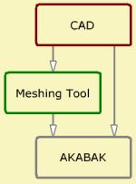

Mesh-Files
| Home |
See also
| Mesh-File-Tags | A Tag is used to refer to a group of mesh-elements. |
| Mesh-File-GMSH | Details on the use of external FE meshing tool. |
| Mesh-File-Simple | Details on the use of external meshes. |
| Mesh-File object | Object hosting all mesh-elements of a file (see General). |
| Elements (Mesh-File) | BEM-component using mesh-file elements (see BEM-Part). |
| Fields (Mesh-File) | Field using mesh-file elements (see Observation-Part). |
| Positioning | Mesh-file elements can specify position of a component. |
In Dim = 3D and 2D mesh-files are a list of planes, typically triangles and quadrilaterals. In Dim=CircSym mesh-files are typically line-segments which gets extruded by rotation inside AKABAK. Mesh-files can be used alternatively to or in combination with the Nodes & Elements approach.
Inside AKABAK the handling of mesh-files is a two stage process:
- General: Mesh-File object loads and holds data.
- BEM: Elements (Mesh-File) and Observation: Fields (Mesh-File) take reference to General and uses a subset.
At page General we load a mesh-file object as a first step. In sub-sequent steps
we create boundaries for the BEM or create observation Fields. These make use
of the elements inside a mesh-file object. Each Element or Field section
may use only a sub-set of mesh-elements of the referenced mesh-file object.
All forms, which are related to mesh-files, allow a convenient selection of mesh-elements.
The coordination is done with the help of Mesh-File-Tags.
Link To CAD
 |
|
 |
 |
 |
 |
 |
 |
Most interestingly, mesh-files can be used to link AKABAK to external CAD software tools. It may not be always the best solution to go directly from CAD to AKABAK. Instead we often prefer to use an intermediate application for meshing, such as GMSH. AKABAK can link to a range of mesh-file formats. Currently supported are
- GMSH (*.msh, version 2.2, text)
- GID (*.msh, text)
- Wavefront (*.obj)
- STL (*.stl, text + binary )
- Collada (*.dae)
- SVG (*.svg, Dim= 2D, CircSym)
- DXF (*.dxf, Dim= 2D, CircSym)
GMSH and GID typically stem from dedicated BEM mesh-generators. The other file-formats stem from simple mesh-generators.
The idea is to draw a structure in a 3D-CAD application and then to use a meshing-tool to create high quality meshes, which eventually can be used by AKABAK.
The CAD drawing is the starting point. For BEM the CAD-drawing should contain only acoustic boundaries and should be as simple as possible. If used for Fields it is best if only planes where the sound pressure is going to be calculated are part of the file - however, this is not mandatory.
Your CAD-application allows to export your draft as STEP or IGES formatted file. You may consider to export groups or layers into individual files.
In the meshing-tool application, such as GMESH, GID or FEMAP, open the STEP or IGES-file, or whatever format you have used during export. Here you create the primary mesh. This mesh should be as coarse as possible. Note, that eventually AKABAK will provide its own meshing on top of the primary mesh. AKABAK can refine the mesh but can not simplify it. See at chapter Meshing.
In your meshing tool, for example GMESH, save the mesh as a mesh-file. Use one of the above listed formats.
In AKABAK create for each mesh-file a data-object of type General/Mesh-File. Open the Mesh-File-form and load the associate mesh-file.
In AKABAK further create sections of type Elements (Mesh-File) and Fields (Mesh-File) as needed. The associate forms let you select the sub-set of elements you want to apply for this component with the help of Tags. For example: The mesh-file object contains planes for the whole loudspeaker. However, one of the Elements-sections may select only the elements of the interior wall.
Mesh-Files can also be referenced for the purpose of the positioning of components.
In short, using an external meshing tool:
- In CAD-application draw your geometry.
- In CAD export structure to a STEP-file (*.stp, ISO 10303).
- In meshing-application import *.stp file
- In meshing-application perform meshing
- In meshing-application export to mesh-file
- In AKABAK create object of type Mesh-File at page General and load the mesh-file.
- In AKABAK sections use the mesh-file selectively.
Meshing Tools
There are many excellent mesh-tools available. These applications are typically
used for preparing for the volume finite element method. For FEM meshing is most
important because in FEM the finite elements and its associated field parameters
are concatenated. Any missing link or connection would yield large calculation errors.
On the other hand is AKABAKs BEM a holistic approach which makes the requests
on the quality of meshing more relaxed.
AKABAK needs only the 2D-surface mesh.
GMESH:
a three-dimensional finite element mesh generator with built-in
pre- and post-processing facilities. GMESH is open-source
provided by C. Geuzaine and J.-F. Remacle.
Note, export mesh-version 2.2 of text format.
GiD is a universal, adaptive and user-friendly pre and postprocessor for numerical simulations in science and engineering. GiD is commercial and provided by CIMNE International Center for Numerical Methods in Engineering.
MeshLab is an open source, portable, and extensible system for the processing and editing of unstructured 3D triangular meshes.
CAD meshes. Many CAD software tools allow to export a mesh. These type of mesh yields often elongated or distorted triangles instead of a compact shape as explained in chapter Mesh-File-Simple.